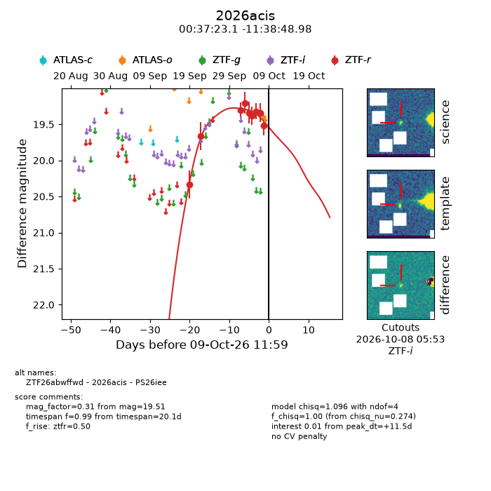
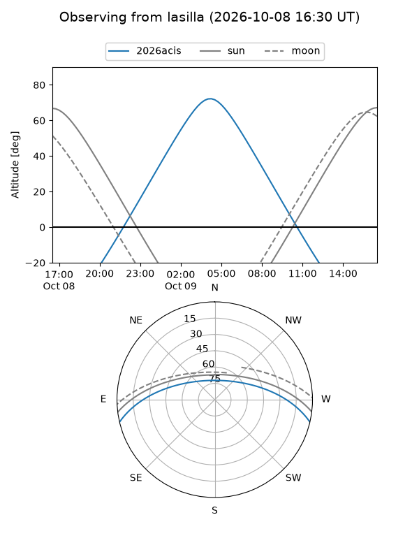
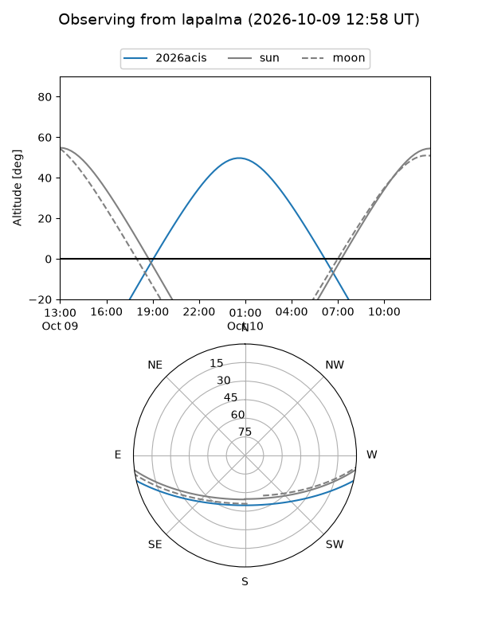
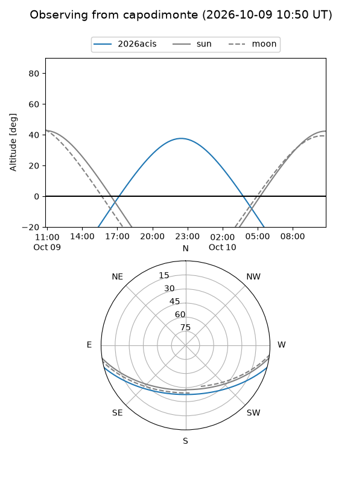
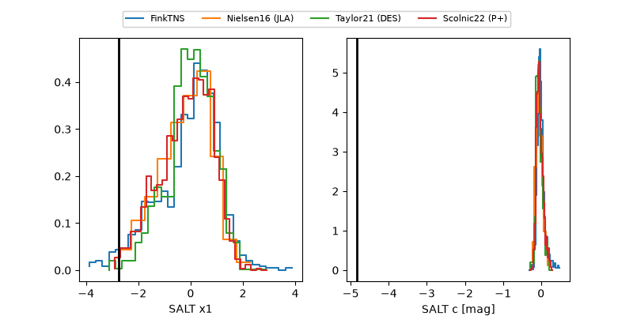

2026acis
Target 2026acis at 2026-10-09 12:01
Aliases and brokers:
FINK-ZTF: ztf.fink-portal.org/ZTF26abwffwd
Lasair-ZTF: lasair-ztf.lsst.ac.uk/objects/ZTF26abwffwd
ALeRCE-ZTF: alerce.online/object/ZTF26abwffwd
YSE-PZ: ziggy.ucolick.org/yse/transient_detail/2026acis
TNS name: wis-tns.org/object/2026acis
Direct TNS query: direct search
alt names
ZTF26abwffwd (ztf,fink_ztf)
2026acis (tns,yse)
PS26iee (panstarrs)
Coordinates:
equatorial (ra, dec) = 9.3464,-11.64694
equatorial (HMS+DMS) = 00:37:23.14,-11:38:48.98
galactic (l, b) = (110.2218,-74.17090)
Flags:
peak dt: +11.5
Photometry:
last ztfr=19.51
9 ztfr detections
Lightcurve

Visibility



Additional plots
